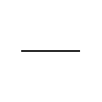
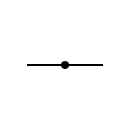
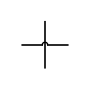
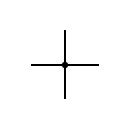

Un material conductor es aquél que permite el paso de la corriente eléctrica a través suyo. Materiales buenos conductores son los metales, como el cobre, el aluminio o el acero.
Por el contrario, un material es aislante cuando no deja pasar la corriente a través de él. Un típico material aislante es, por ejemplo, el plástico.
A continuación te indico los símbolos más habituales para los conductores:
| NOMBRE | SÍMBOLO |
| Conductor |  |
| Empalme |  |
| Cruce sin conexión | |
| Cruce sin conexión |  |
| Cruce con conexión |  |